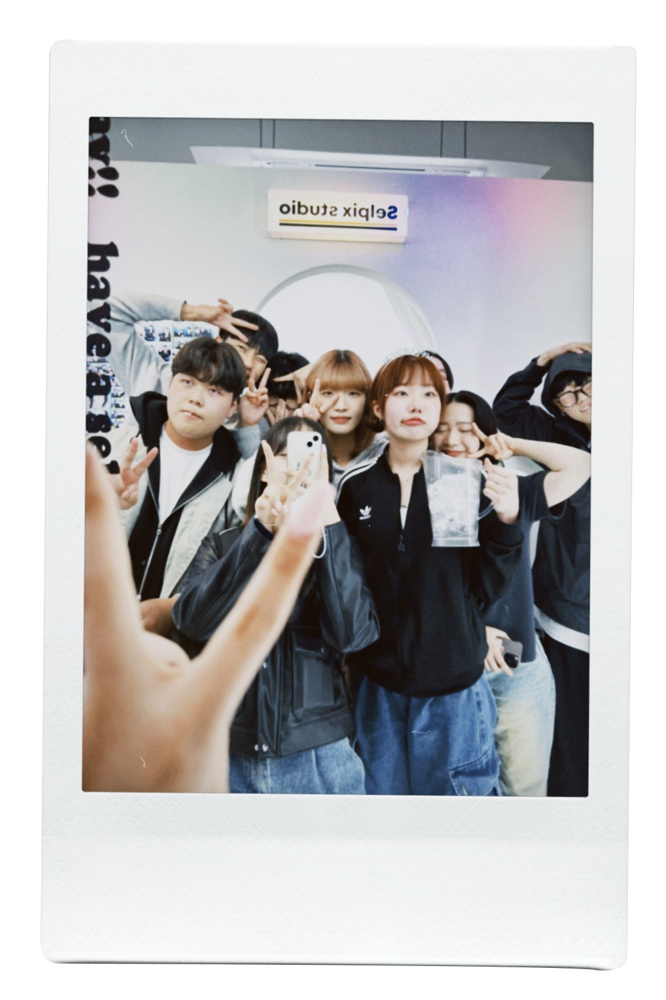

|
기획기초 수업 들으러 학교에 갔다가 아르바이트 끝나고 집으로 돌아가는 길. 평소와 다르게 머리를 땋아 보았다. 생각보다 잘 어울려서 하루 종일 기분이 좋았던 날이다. 기분이 좋은 날 찍은 사진이라 그런지 마음에 든다. a part-time job at school to take basic planning classesIt's over at home. My hair is different from usualI knitted it. It looked better than I thought, all day longIt was a pleasant day. I took this picture on a happy dayI see, I like it. 企画基礎授業を受けに学校へ行ってアルバイト 終わって家。 いつもと違って髪を編んでみた。 思ったよりよく似合って一日中気分が良かった日だ。 気分がいい日に撮った写真なのでそうか気に入った。 |

|
대학 동기들과 다같이 술먹으러 갔던 날. 술 먹고 그냥 헤어지기 아쉬워서 다같이 셀픽스를 찍으러 갔다. 머리띠도 쓰고 거울 앞에서 함께 찍은 거울 사진. 옹기종기 모여 찍은 사진을 보면 그때의 추억이 생각난다. The day I went out drinking with my colleagues. It's a waste to break up after drinking, so let's get some selfies together I went to film it. I wore a headband in front of the mirror Looking at the mirror photos we took together It reminds me of those memories. 大学の同期たちと一緒に飲みに行った日。 お酒を飲んで別れるのがもったいなくて み んなでセルフィックスを撮りに行った。 カチューシャもつけて、鏡の前で一緒に 撮った鏡写真。 集まって撮った写真を見ると あの時の思い出が思い出される。 |

|
대학교에 입학하고 처음한 대학 축제. 부스 스태프에 참여하여 다른 동기들과 열심히 축제를 즐겼다. 더운 날씨, 스태프 일 하다 지친 우리는 점심으로 시원한 냉면을 시켜 먹었다. 일하고 먹은 밥이라 그런지 평소보다 더 맛있었던 냉면. It was my first university festival since I entered the university. to the booth staff I participated and enthusiastically enjoyed the festival with other colleagues. In the hot weather, we were tired from the staff's work I ordered cold noodles. It's a meal that I worked and ate I see. Cold noodles were better than usual. 大学に入学して初めての大学祭。 ブーススタッフに 参加して他の同期たちと熱心に祭りを楽しんだ。 暑い天気、スタッフの仕事で疲れた私たちはお昼に 冷たい冷麺を頼んで食べた。 働いて食べたご飯だから そうか、いつもよりおいしかった冷麺。 |

|
머리를 양갈래로 묶은 기념 사진 찍은 날. 과대인 정우 오빠와 부과대인 나. 함께 셀픽스에서 머리띠를 쓰고 귀여운 사진을 찍었다. 머리를 귀엽게 묶었더니 사진도 귀엽게 나와 마음에 들었던 추억. The day I took a picture with my hair pigtails. CEO Jungwoo and I, the vice CEO, will be on self-fix together I wore a headband and took a cute picture. If you tie your hair in a cute way, the picture will be cute too Favorite memories. 髪をツインテールにした記念写真を撮った日。 代表のジョンウさんと副代表の私。 一緒にセル フィックスでカチューシャをしてかわいい写真 を撮った。髪を可愛く結んだら写真も可愛い 気に入った思い出。 |
|  |
학교 앞 술집에서 술 마시다가 실내건축디자인과 친구들과 친해진 날. 마침 율린 언니의 생일이여서 기념하고자 셀픽스에 갔다. 거울 앞에 옹기종기 모여 거울 사진을 찍고, 율린 언니의 생일을 축하해줬다. 타과 사람들과 친해진 좋은 추억. Department of Interior Architecture Design after drinking at an izakaya in front of school The day I became close to my friends. It was Yurin's birthday I went to Selfix as a souvenir. whispering in front of a mirror, Let's get together and take a mirror photo to celebrate Yurin's birthday They congratulated me. It's a good memory to get along with people from other departments. 学校前の居酒屋でお酒を飲んで室内建築デザ イン科友達と親しくなった日。 ちょうどユリン さんの誕生日だったので記念にセルフィックスに 行った。 鏡の前にひそひそと集まって鏡写真を 撮ってユリン姉さんの誕生日を祝ってくれた。 他科の人たちと仲良くなったいい思い出。 |

|
학교에서 수업 듣다가 쉬는 시간에 테라스에서 찍은 사진. 노트북만 보다가 밖에 나와 자연을 보며 조금이나마 눈에 피로를 덜었다. 다같이 모여 있는게 귀여워서 사진으로 추억을 남겼다. at school and on the terrace during recess Pictures I took. Just look at my laptop and go outside to see nature I relieved my eyes of fatigue even a little while watching it. Let's get together Being there was so cute that I left a memory with pictures. 学校で授業を受けて休み時間にテラスで撮った 写真。ノートパソコンだけ見て外に出て自然を 見ながら少しでも目の疲れを取った。 みんなで集 まっているのが可愛くて写真で思い出を残した。 |

|
대학교 축제날 찍은 사진. 부스 스태프를 하느라 바빴지만 쉬는 시간에 민준 오빠와 생맥주를 마셨다. 흘러나오는 노래를 들으며 한창 신난 우리. 추억으로 남기기 위해 사진을 찍었다. Photos taken on college festival day. I was working as a booth staff I was busy, but I drank draft beer with Minjoong during recess. We're having so much fun listening to the songs. I took a picture to remember. 大学祭の日に撮った写真。 ブースのスタッフ をしていて忙しかったが休み時間にミンジュン 兄と生ビールを飲んだ。流れる歌を聞きながら、 すごく楽しそうな私たち。思い出に残すために 写真を撮った。 |

|
혜린 언니랑 지현 언니와 찍은 사진. 수업 듣다가 쉬는 시간에 테라스에 나왔다. 구름 한 점 없이 맑고 파란 하늘이 너무나도 예뻐서 하늘을 배경으로 우릴 찍었다. 자퇴한 혜린 언니가 보고싶어지는 사진이다. The picture I took with Hyerin and Jihyun. I took classes and went out to the terrace during recess. The sky is so clear and blue without a cloud They took pictures of us against the beautiful sky. This is a picture that makes me miss Hyerin, who dropped out of school. ヘリンさんとジヒョンさんと撮った写真。 授業を受けて休み時間にテラスに出た。 雲一つなく澄んで青い空があまりにも きれいで空を背景に私たちを撮った。 退学したヘリンさんに会いたくなる写真だ。 |